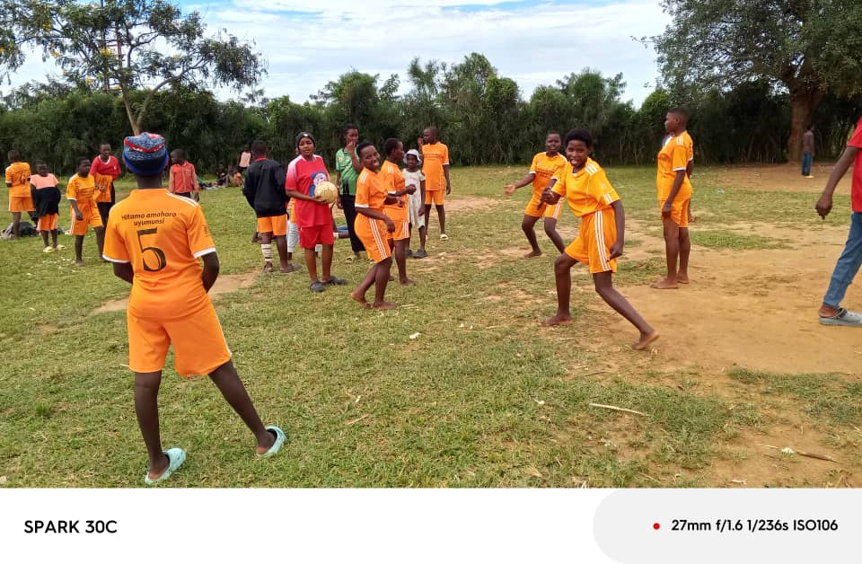

Peace Tournament
A platform for refugee families to not only showcase their sporting, musical, and arts’ prowess, but also to promote unity, understanding, and integration within the international community that comprises the Nakivale Settlement.
Peace Through Play
The Nakivale Community strongly believes that our football, art, and music tournaments align with our mission of promoting solidarity through community service. The youth tournaments bring together the whole community in a spirit of collaboration and competition. Allowing the diverse cultures, languages, and challenges of the Nakivale population into unity.
The Football Tournaments promote peace through fair play and healthy relating. The Arts and Musical Tournaments showcase and support the talents of refugee children. By fostering social cohesion and promoting peace among refugees, we aim to create an environment that allows children to thrive and find solace away from the stress associated with their displacement.

Turning the Game into Peace, Purpose, and Opportunity
Unity
Young people from different backgrounds come together as teammates—breaking barriers and building trust through the game.
Discipline & Leadership
Through structured play, youth develop confidence, responsibility, and the mindset to lead both on and off the field.
Safe Space and Belonging
The tournament creates a positive environment where children feel seen, supported, and free to grow beyond conflict.
Peace In Motion

Team building

